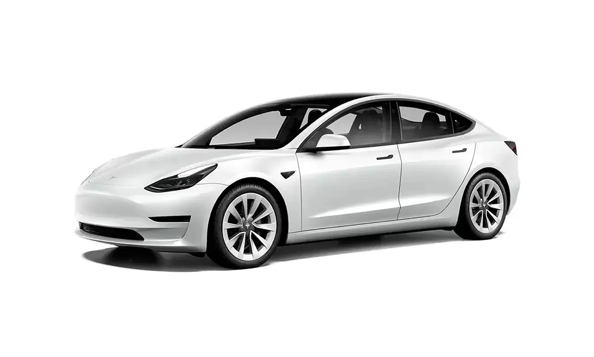

Tesla Model 3 — электрический седан американской компании Tesla, представленный в 2016 году и выпускаемый с 2017 года. Модель создавалась как «народный электромобиль» стоимостью от 35 тысяч долларов и ещё до выхода собрала более 400 тысяч предзаказов. Именно Model 3 сделала электромобили массовым явлением: её выпускают заводы в Калифорнии, Шанхае и Берлине, а по итогам нескольких лет она становилась самым продаваемым электромобилем в мире.В версии Long Range автомобиль проезжает более 600 километров на одном заряде и разгоняется до 100 км/ч за 4.4 секунды. Салон выполнен в минималистичном стиле: почти все органы управления сосредоточены на одном 15-дюймовом экране, а обновления программного обеспечения приходят «по воздуху», добавляя новые функции без визита в сервис. Фирменный автопилот умеет держать дистанцию, перестраиваться и парковаться, что делает Model 3 одним из самых технологичных автомобилей своего класса.
История модели
Презентация прототипа состоялась 31 марта 2016 года, а первые серийные машины сошли с конвейера завода в Фримонте в июле 2017 года. В 2019 году выпуск наладили на гигфабрике в Шанхае, в 2022-м — под Берлином, что сделало Model 3 по-настоящему глобальной моделью. В 2023 году седан пережил глубокий рестайлинг под кодовым именем Highland: обновлённый дизайн, улучшенная шумоизоляция и увеличенный запас хода.
Технические характеристики (Long Range)
| Параметр | Значение |
|---|---|
| Мощность | 283 л.с. |
| Запас хода | 602 км (WLTP) |
| Разгон 0-100 км/ч | 4.4 с |
| Максимальная скорость | 233 км/ч |
| Привод | Полный |
| Ёмкость батареи | 75 кВт·ч |
| Длина | 4694 мм |
| Объём багажников | 594 л (с передним) |
Комплектации
- Standard Range — базовая версия с задним приводом
- Long Range — увеличенный запас хода и полный привод
- Performance — спортивная версия с разгоном за 3.1 с
Конкуренты
- BYD Han
- BMW i4
- Polestar 2
- Hyundai Ioniq 6
- Volkswagen ID.7
Автопилот
Model 3 оснащена системой Autopilot, которая позволяет автоматически поддерживать скорость, перестраиваться в потоке и парковаться. За доплату доступна функция Full Self Driving, постоянно улучшаемая за счёт обновлений программного обеспечения «по воздуху».